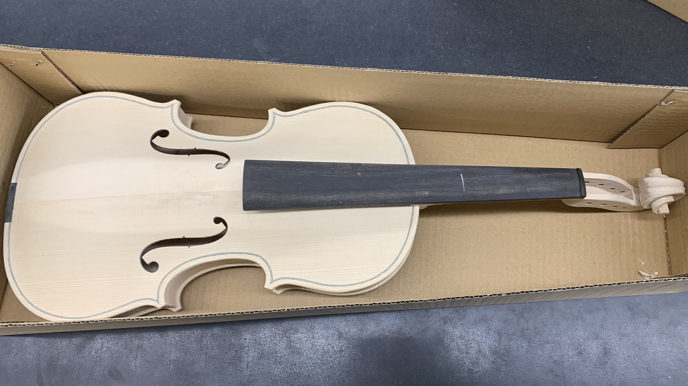
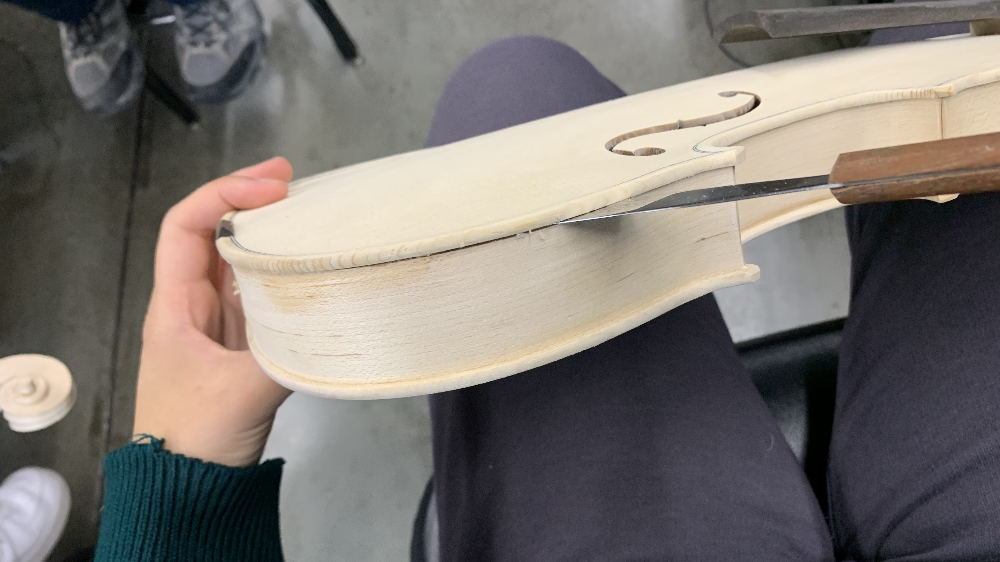
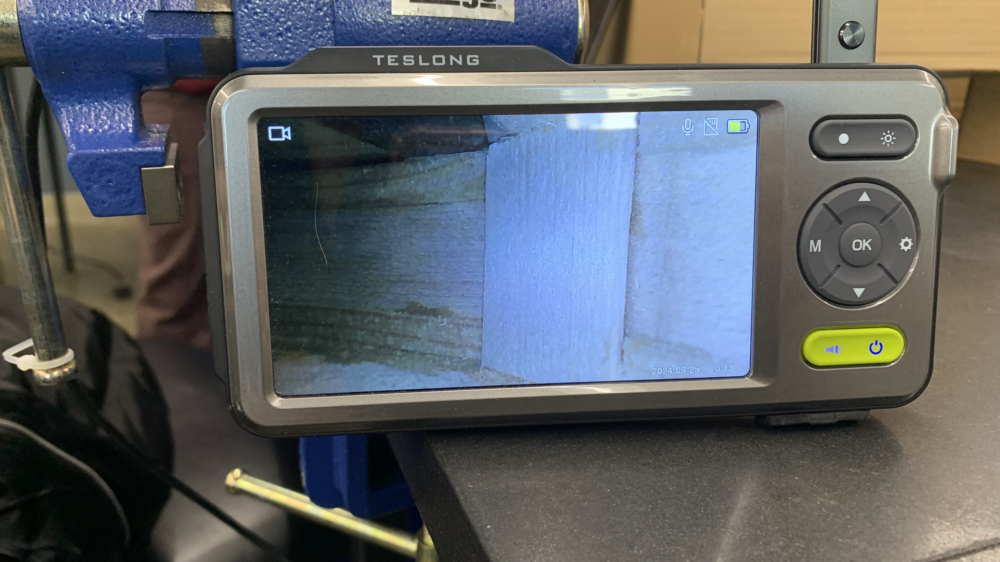
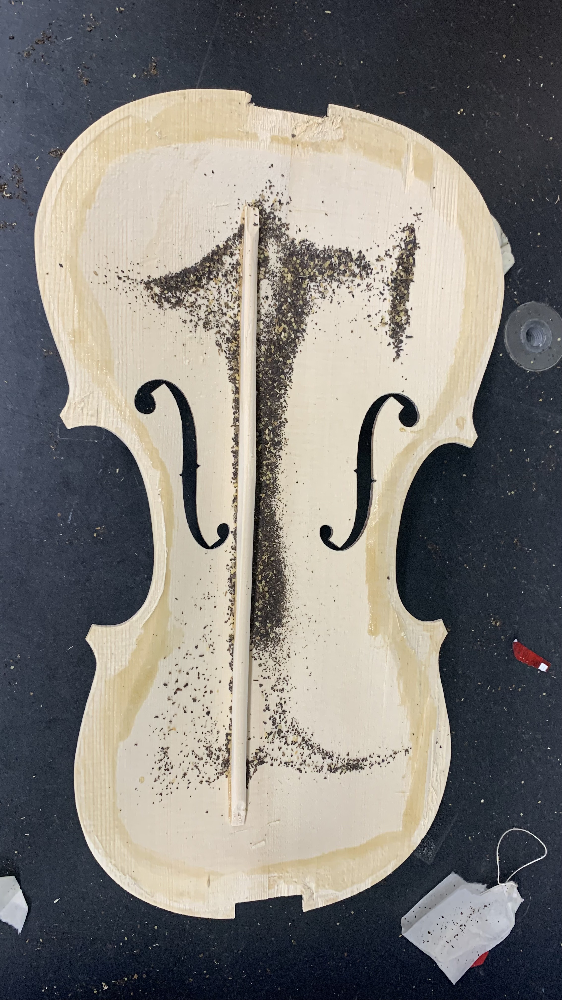
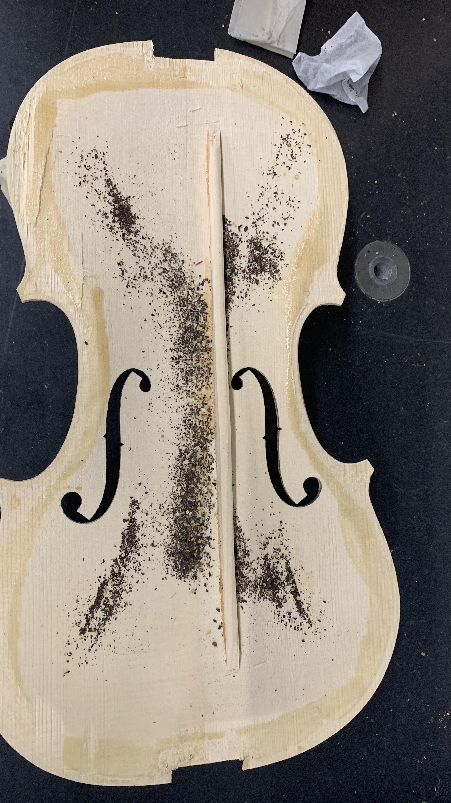

Problem Statement

Initial white violin
Improve the sound of a cheap, unfinished violin.
Ideas and Prototyping

Taking off top plate

Inside of violin

Mode testing

Mode testing
- Separated top plate.
- Tested mode frequencies through tea leaf method and Audacity frequency analysis.
- Used planes to carve top plate to desired thickness.
Challenges
Separating the top plate required a ton of patience and careful yet precise movement or else the wood could easily split at the grain.
Results
Caption
Voted best-sounding violin in a class of 6, judged by anonymous recordings.